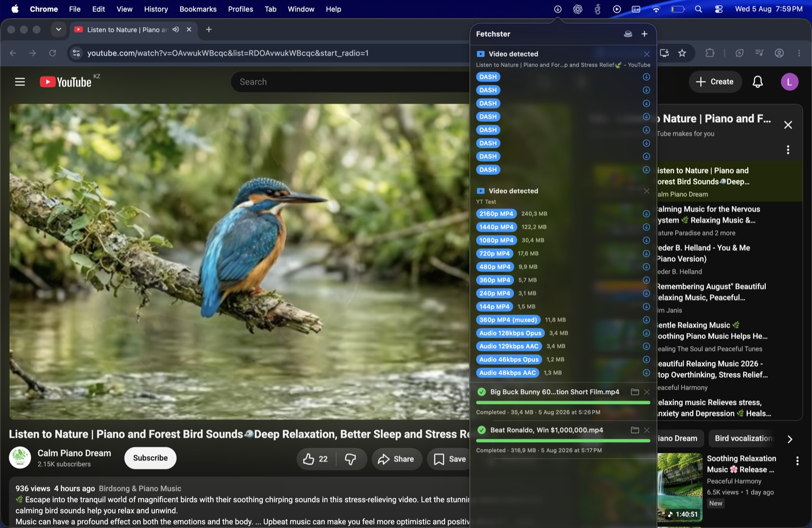
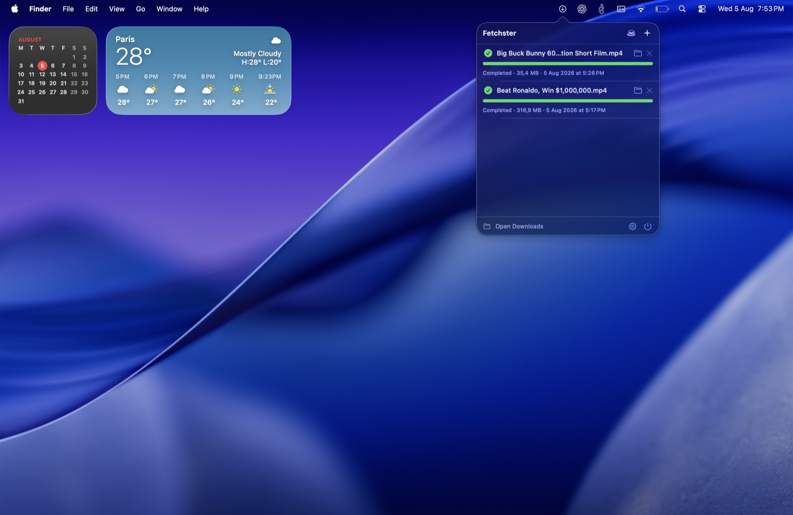

Menu bar only
A native top-bar dropdown with the exact look and feel of macOS. No Dock icon, no window, no distraction.
Fetchster is a native macOS download manager that lives in the top bar. Files, torrents, magnets, and video — everything lands in one clean list, with the look and feel of macOS itself. No Dock icon. No clutter.
One menu-bar item. Every download you care about.
A native top-bar dropdown with the exact look and feel of macOS. No Dock icon, no window, no distraction.
HTTP, HTTPS, FTP, torrents, magnets — anything with a link. Pause and resume with byte-range accuracy.
The companion extension routes browser downloads to Fetchster with your exact headers, cookies, and User-Agent.
Full torrent engine with DHT, peer exchange, seeding, live swarm stats, and tracker management built in.
Playing a video? The icon pops. Pick 4K, 1080p, or audio-only from the menu bar and it downloads, merged to MP4.
Engines are fetched on demand from official sources — yt-dlp and ffmpeg update themselves, and the app stays lean.
Straight from the menu bar.

YouTube and more — a full quality list (4K to audio-only) right in the menu bar. One click, done.

Progress, speed, ETA, and status for every download — torrents included — in a native top-bar dropdown.
The app icon appears in your menu bar. No Dock icon, no setup wizard.
One click in Brave or Chrome, and browser downloads route to Fetchster with your real session.
Files, magnets, torrents, playing videos — all in one clean list. Enable torrents and media in Settings.
yt-dlp and ffmpeg download from their official sources only when you enable Media downloads; the torrent engine downloads when you enable Torrent downloads. The app itself stays small.
Get Fetchster